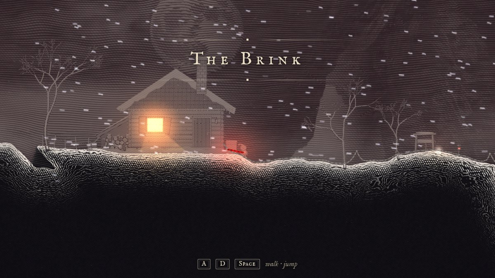
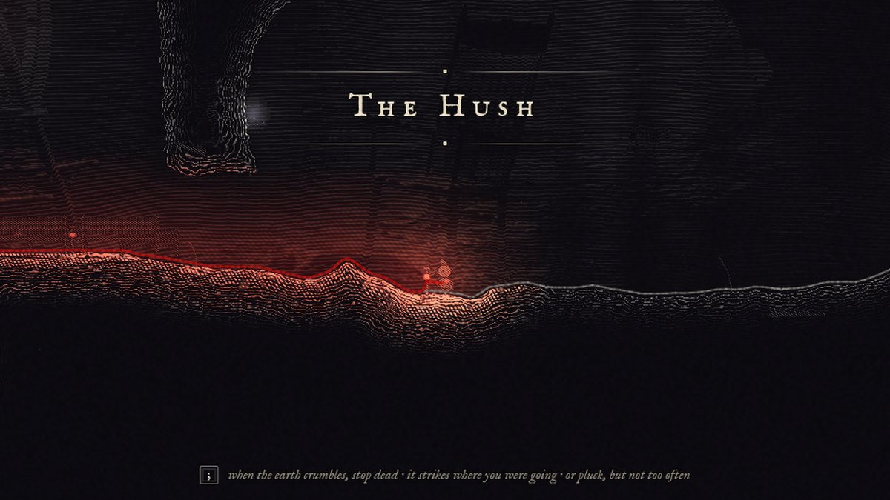
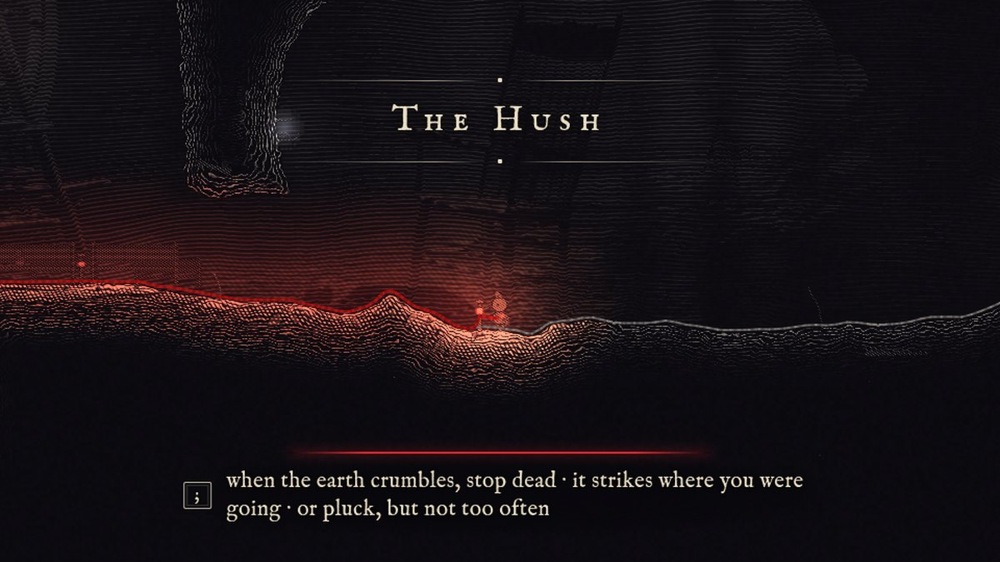

Three changes in one go. The hands in the Hush can no longer feel you, reach you or seize you through rock. The knots of light are gone from the game, and E now only ties, mends and sits. The tips at the bottom of the screen are larger, brighter and sit on a dark band, and a red thread draws across above each new one so you notice it.
Hands and Rock
make sure hands cannot reach me through walls in the game
A hand used to choose its moment by distance alone. It then shot out in a straight line toward where you were heading, and it could grab anything within half a metre of its palm. Nothing checked for rock on the way. The long-reaching hands under the Slabs could push their arms through the ledge you were standing on, and now and then one took hold of you from the other side of a wall.
It has to see you to stir. A hand wakes only if there is open air between its root and you. Rock in between hides you completely.
The arm stops at the first rock. Every frame, the arm is traced from the hole outward and cut short where it meets rock. If a lunge hits rock it turns into a short grope at that spot, and then the hand gives up and draws back.
It can only seize you with a clear line. A palm near you through a thin wall can't take hold.
It is drawn in the air too. The drawn arm bows a little to one side. It now bows toward the open side, and never further than the air around its middle allows.
Measured
Bots crossed five stretches of the Hush (H1, the Slabs, the Pin Walk, and the long gallery both ways), four ways of playing, eight runs each. These are the same seeds on the old build and the new one.
Before
After
Frames with an arm inside rock
2,981
0
Grabs made through rock
15 of 340
0 of 320
Bot deaths (of 160 runs)
70
70
The hands are just as dangerous in the open as before. The hands check (hands.mjs) gives the same results for every bot except one: on H1, plucking every 1.4 s now always gets through, because the hand that used to kill that bot was coming through rock. Both modes of the whole-game bot reach the choice, and the rooms check passes.
No More Knots of Light
please remove the mechanics of knitting knots of light in this game, it seems to be useless to me
Gone: tying a burning knot into the thread with E, its yarn cost, moths circling it, and hands closing on it instead of you. Also gone are its drawing, its sounds and its two tips: the one in the Root Gardens, and the second half of the dimming tip in the Hush.
Kept: dimming the light, the seats, and the named quiet places. E ties at a pole, mends a broken thread and sits on a seat. Away from those it does nothing and costs no yarn. In the controls menu its name is now "Tie, mend, sit".
Saves: knots in an old save are ignored. The session log no longer counts knots, and logs.py still reads older logs.
Tips You Can Read
make the tips in the bottom of the screen easier to read and see, they are too small, unnoticable

BeforeAfter
Drag the thread to compare


BeforeAfter
Drag the thread to compare
Larger: 21–32 px, depending on the window, instead of 15–19 px. It still follows the subtitle size option.
Brighter and steadier: the text is full paper colour instead of 62 %, in upright type instead of thin italics, on a soft dark band, with stronger key caps.
Noticed: a red thread draws across above each new tip as it appears, and it sits a little higher off the screen edge.
Long tips wrap into two lines next to their key instead of running off as one long line.
app/src/deep.jsthe hands: line of sight to stir and seize, arm cut at rock, the knot lure removed
app/src/drawend.jsthe arm's bow kept in the air
app/src/kindle.js, drawkindle.js, world.js, main.js, draw.js, options.jsknots of light removed
app/style.css, app/src/main.jsthe tips
scripts/checks/hands.mjs, quiet.mjs, logs.pychecks without the knot